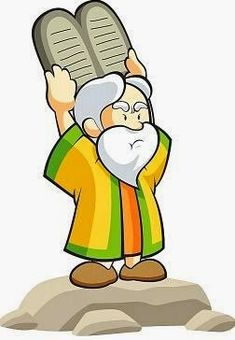

Moisés fue un líder destacado en la historia bíblica. Nacido en tiempos de esclavitud en Egipto, fue salvado de la muerte y criado en la casa del faraón. Con un corazón compasivo y un sentido de justicia, Moisés se enfrentó al faraón para liberar a su pueblo, los israelitas, de la esclavitud. Guiado por Dios, realizó milagros como la división del Mar Rojo para salvar a su gente. Durante cuarenta años, lideró a los israelitas en el desierto, recibió los Diez Mandamientos y guió al pueblo hacia la Tierra Prometida. Su vida es un ejemplo de fe, valentía y liderazgo.